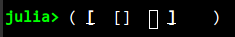
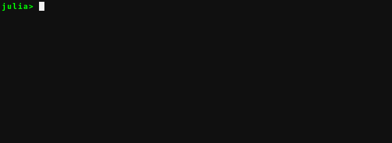
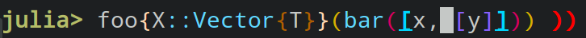
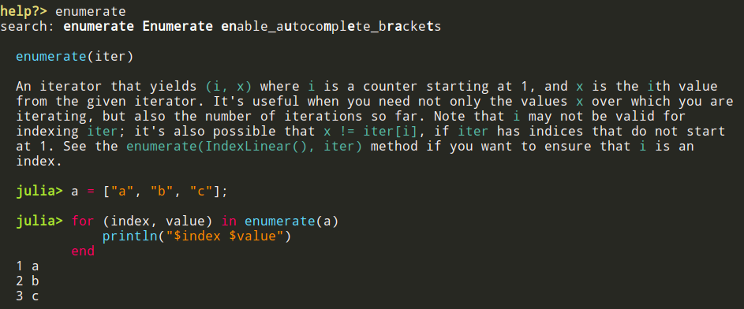

Native REPL features
The features below used to be implemented by OhMyREPL but are native to the Julia REPL as of Julia 1.13. They are enabled by default. OhMyREPL keeps small toggles for them so that existing startup.jl files continue to work.
Bracket highlighting

Makes the enclosing brackets highlighted when the cursor is inside a bracket pair.
Can be disabled or enabled with OhMyREPL.enable_pass!("BracketHighlighter", ::Bool).
Bracket completion
Will insert a matching closing bracket to an opening bracket automatically if this is deemed likely to be desirable from the context of the surrounding text to the cursor.

Can be disabled or enabled with enable_autocomplete_brackets(::Bool), which sets the REPL's native auto_insert_closing_bracket option.
Rainbow brackets
Colors nested brackets in different colors (with unpaired closing brackets shown with the error face):

The colors are derived from the active colorscheme (the julia_rainbow_* faces).
Can be disabled or enabled with OhMyREPL.enable_pass!("RainbowBrackets", ::Bool), which sets JuliaSyntaxHighlighting.RAINBOW_DELIMITERS_ENABLED.
Markdown syntax highlighting

Code blocks written in markdown syntax (for example in docstrings) are highlighted with the active colorscheme.